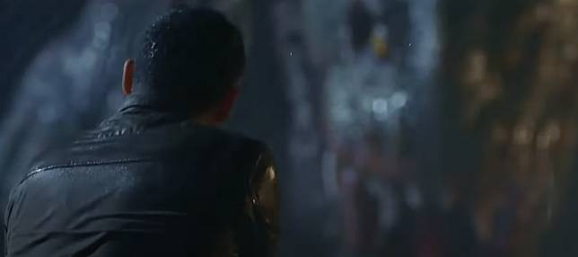
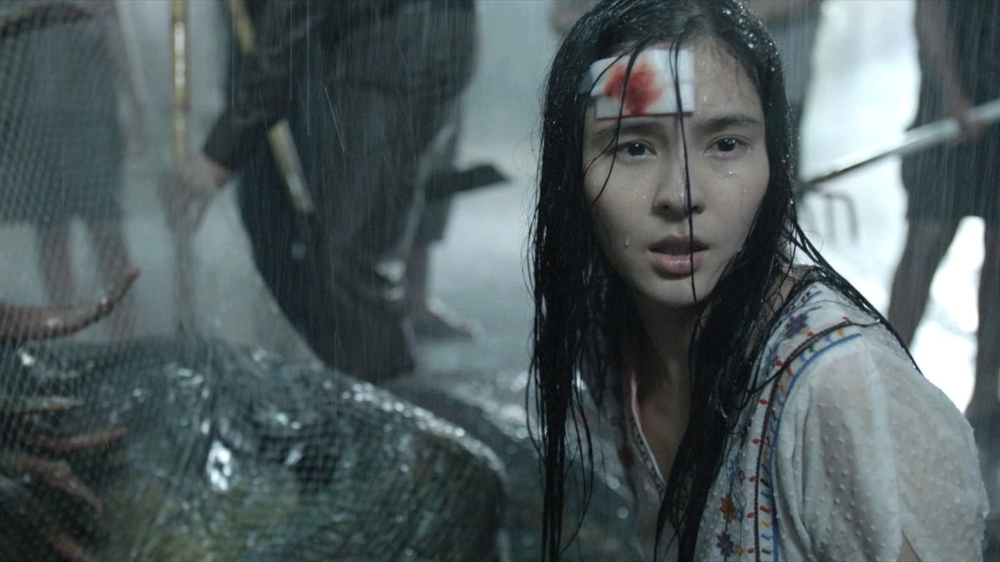
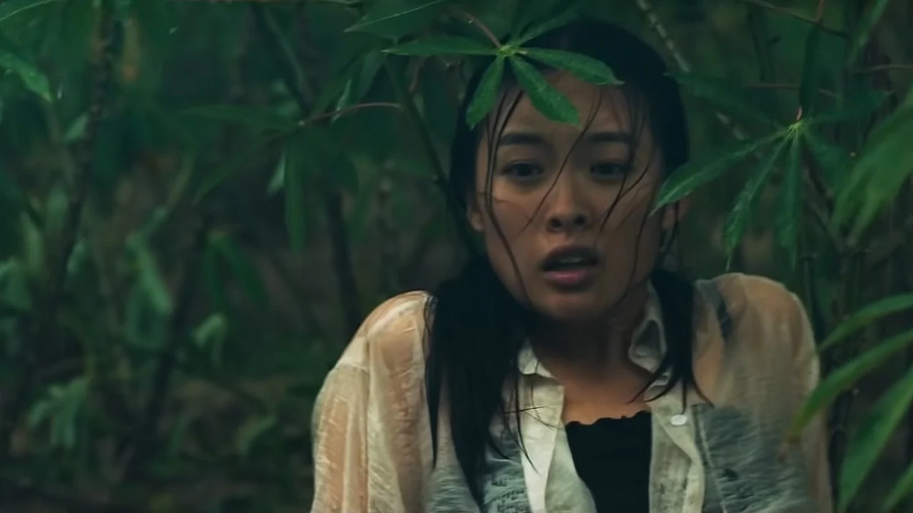
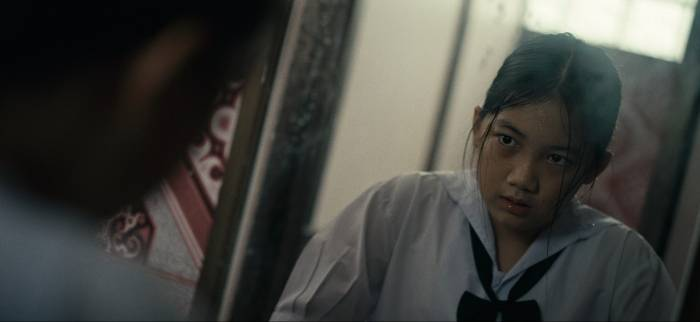

(เปิดเผยเนื้อหาส่วนหนึ่งของภาพยนตร์)
หลังจากเนิ่นรอมานานถึง 5 ปี โปรเจ็คต์ "The Lake บึงกาฬ" ก็ได้ออกมายลโฉมบุกโรงภาพยนตร์ทั่วประเทศสักที ถึงภาพรวมจากปากหลายๆคนอาจจะไม่ประทับใจเท่าไหร่ แต่ก็เป็นที่น่าสนใจเหมือนกันว่าสตอรี่ที่ลี ทองคำและฮอลลีวู้ด ไทยแลนด์เข็นมาตลอด 5 ปีที่เล่าเรื่องของสัตว์ประหลาด "ไทจู" บุกจังหวัด "บึงกาฬ" โดยเล่าจากมุมมองชาวบ้านที่แตกแยกย่อยออกไปในหลากหลายตัวละครในพื้นที่
เมย์ (วันใหม่ ฉัตรบริรักษ์) ที่เดินเตร่ไปพบไข่ปริศนาและนำกลับบ้าน แต่ถูก ลิน (สุชาร์ มานะยิ่ง) ปฎิเสธด้วยนํ้าเสียงที่หงุดหงิดและบอกให้นำกลับไปไว้ที่เดิม ก่อนที่เมย์จะหายตัวไป ลินและ เก่ง (ธนฉัตร ตุลยฉัตร) จึงออกตามหาเมย์ โดยไม่รู้เลยว่า ไข่ปริศนาที่ว่าจะฟักตัวและออกโจมตีชาวบ้านบริเวณนั้น
เจมส์ (ธีรภัทร์ สัจจกุล) สารวัตรหนุ่มที่เข้าไปในจุดเกิดเหตุซึ่งเป็นงานที่เขาเข้าไปตรวจสอบอยู่แล้ว แต่ติดตรงที่ว่ามันแปลกไปหมด ทั้งหลายจุดที่มีเมือกแหยะๆ และศพที่เสียชีวิตอย่างเป็นปริศนาและผิดวิสัย ซึ่งทำให้เราเข้าใจว่า "มันไม่ใช่มนุษย์แน่ๆ" ก่อนที่ภายหลังจากนั้นเหตุการณ์ที่คล้ายๆ กันจะเกิดถี่ขึ้นในหลากหลายจุด สุวัต (วิทยา ปานศรีงาม) หัวหน้าตำรวจจะเข้ามาสั่งการและวางแผนที่จะล้อมจับสัตว์ประหลาดและ แปม (สุพรรณษา เวชกามา) ถูกลากเข้ามาในเหตุการณ์ที่ทำให้เจมส์เกิดจุดเปลี่ยนครั้งใหญ่อีกครั้งในชีวิตของเขา หลังจากภรรยาจากไปเมื่อหลายปีก่อน
เอาแค่สองเส้นเรื่องตัวละคร จากหลายหลายเส้นเรื่องที่สะเปะสปะและยิ่งเดินเรื่องเท่าไหร่ก็แตกกระจายออกไปเรื่อยๆ ของ "The Lake บึงกาฬ" อาจจะพูดได้ว่าผู้กำกับอาจจะอยากพยายามเล่าเรื่องของสถาบันครอบครัวในประเทศไทยเราให้กลืนไปกับสถานการณ์ที่หลายคนสับสน งุนงง และบางกลุ่มถึงกับอยากฆ่าสัตว์ประหลาดเต็มที แต่น่าเสียดายตรงที่หนังพยายามจะเล่นจุดนี้หลายครั้ง ไม่ใช่แค่กับสองเส้นเรื่องข้างบน มีตัวละครอื่นด้วย คือพยายามเป็นมนุษย์ แต่เป็นไม่ได้เพราะไต่ระดับไม่ถึงเพราะหนังไม่มี Protagonist ในเรื่องเลย หรือง่ายๆ ก็คือ "หนังไม่รู้จะโฟกัสจากจุดไหนเป็นหลัก"
ด้วยเหตุนี้เอง ทิศทางของหนังเลยสับสนตามไปด้วย ซํ้าเติมไปด้วยการตัดต่อ การไม่อธิบายว่าลักษณะพื้นที่บึงกาฬเป็นยังไง แล้วทำไมสัญญาณโทรศัพท์ไม่มีแต่มีคลิปหลุดไปในโซเซียล หือ? และความต่อเนื่องที่ทำเรานั่งไม่ติดเก้าอี้แทนจะที่จะตื่นเต้นจนนั่งไม่ติดเก้าอี้ แบบ "ฮะ? อ้าว เอางี้เลยเหรอ" ผู้กำกับหรือทีมผู้สร้างอาจจะมั่นใจกับหนังในฉบับที่ผู้กำกับ (รึเปล่า) อยากเล่าจึงปล่อยออกมา แต่อยากพูดเหมือนกันว่าการตัดมาในลักษณะนี้ แถมบางตัวละครก็ถูก Fade in - Fade Out มาเฉพาะช่วงที่จำเป็น (รึเปล่า) ทำให้เรารู้สึกว่าเขาน่าจะสกรีนเทสจากกลุ่มทดลองสักนิด หรือถ้าไม่อยากหลุดดีเทลก็อยากให้มีคนมาช่วยตัดต่อล่ะนะ ผู้กำกับอาจจะเข้าใจ แต่ผมไม่เข้าใจ โผล่มาอีกที่คือจากเช้าสายๆ ช่วงท้ายวาร์ปมา 5 ทุ่มกว่าแล้ว ถ้าไม่บอกนึกว่ามันเกิดมา 2-3 สัปดาห์แล้ว - นอกจากนี้ช่วงต้นเรื่องยังวางรายนามผู้สร้างไว้แปลกด้วย บางเฟรมก็ทับซีนเหมือนนึกอยากจะวางก็วาง ถ้าจะวางไว้แบบนั้น ขึ้นฉากดำแล้วขึ้นชื่อผู้สร้างเหล่านั้นก่อนเข้าหนังเต็มๆ ก็ได้

แต่ถึงกระนั้นการมาขององค์ 3 ของเรื่องที่ผู้กำกับถึงกับบอกว่า “โอเคละ เราทำหนังสัตว์ประหลาดหลักๆ ต้องมีฉากแอ็กชันวิ่งหนี แต่พอถึงช่วงองก์สุดท้ายของหนังทุกอย่างจะกลับตาลปัตร วิทยาศาสตร์ ความเชื่อศาสนา ขนบธรรมเนียมความเป็นไทย ทั้ง 3 เส้นเรื่องจะเดินทางมาขมวดรวมกัน ผมอยากให้คนดูได้สนุกไปกับการตีความ ดังนั้น ผมเลยไม่กังวลกับตัวอย่างที่ปล่อยออกไปแล้วเผยให้เห็นสัตว์ประหลาดทั้งตัว ว่าจะมีส่วนไปลดทอนความสนุกของหนัง” [1]
ซึ่งตัวผู้เขียนเองก็ได้อ่านบทสัมภาษณ์ของผู้กำกับคนนี้ก่อนเข้าไปในโรงไม่กี่นาที ทำให้ตัวผู้เขียนเองก็ปล่อยวางกับหนังไปในระดับนึง หากเรื่องนี้ (หรือฉบับนี้) ไม่มีปัญหากับการตัดต่อที่ดูมึนงงแบบนี้ ก็อาจจะถูกพูดถึงไปอีกนานแสนนานในเรื่องของการหักมุมมองของมันที่มองสัตว์ประหลาดในฐานะหนังระทึกขวัญ ที่มีกลิ่นอายของดราม่าและวิทยาศาสตร์แล้วผลักเราเข้าไปสู่มุมมองเชิง "พระพุทธศาสนา" มีแซะการเมืองระดับท้องถิ่นที่ไท๊ยไทย
ที่ชวนน่าตกใจกว่าคือเหมือนหนังเองก็รู้สึกว่าเราไม่น่ามาทางนี้เลย แล้วก็เลือกจบตัวเองลงด้วย End Credit ด้วย Design และ Text แบบ "อืม" และการหยิบใช้เพลงในช่วงโค้งสุดท้ายแบบรีบเร่ง ถึงอิปิค แต่หนังเล่ามาถึงแบบนั้นมันก็ไม่ช่วยให้ "อิปิค" แล้ว ทำให้จังหวะของหนังถูกเร่งและไม่ช่วยตอบคำถามอะไรเท่าไหร่นอกจากมาช่วยชี้นำกันตรงๆ
ส่วนตัวแล้ว "The Lake บึงกาฬ" ก็มีบาดแผลไม่น้อย แต่หากจะมองในความกล้าบ้าบิ่นในการหักหนังไปทางนั้นก็ยอมรับในการตัดสินใจ หนังเองก็อยู่ในสถานะ "ไม่ได้ดีและก็ไม่ได้แย่อะไร" ถ้าหากจะดูแยกเป็นส่วนๆ งานสร้าง CG บวกกับ Animatronic ก็อยู่สถานะที่ดีจากที่คาดไว้เหมือนกัน นักแสดงก็มอบการแสดงที่น่าจะเป็นที่สุดในการดึงพลังออกมา เว้นเสียแต่ทิศทางหนังงงงวย ตัดต่อหนังสะเปะสะปะ ไม่งั้นหนังคงได้ใจจากคนดูมากกว่านี้